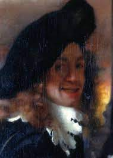
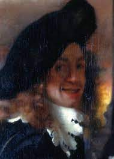

La Ragazza con l’orecchino di perla o Ragazza col turbante è uno dei più famosi quadri di Jan Vermeer e a i dipinti più belli di tutti i tempi. Pare che l’artista olandese lo abbia dipinto nel 1665- 1666 (o, secondo alcuni, in anni ancora successivi). Dipinto ad olio su tela, è conservato al Mauritshuis dell’Aia e soprannominato talvolta “la Monna Lisa olandese”. Nonostante non si conosca con certezza l’identità della modella, desta sicuramente curiosità la foggia del turbante e il conasto a la modesta provenienza della bella fanciulla e la ricchezza della perla che indossa all’orecchio. La sua figura emblematica è stata celebrata anche dall’omonimo romanzo di acy Chevalier e dal film che ne è stato atto nel 2003 (con Scarlett Johansson e Colin Fir).